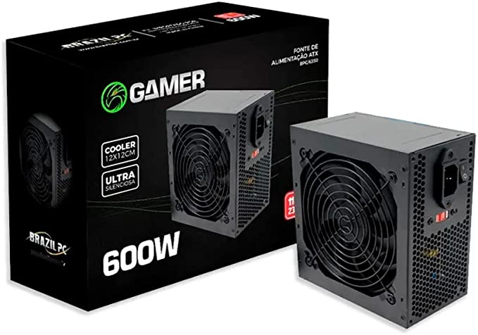

Fonte
As fontes de alimentação possuem função principal de transformar a corrente elétrica da rede, que chega em uma voltagem alta, para uma voltagem menor, que é a indicada para o hardware do computador
Informações principais
Esse é outro aspecto de extrema importância na hora de escolher uma fonte. Em poucas palavras, a eficiência é uma medida percentual que indica o quanto de energia da rede elétrica, isto é, da corrente alternada, é efetivamente transformada em corrente contínua.
Fonte Corsair CX650F RGB - 650W, 80 Plus Bronze Modular, Preto - CP-9020217-NA
 R$699,90
R$699,90
Á vista
Em até 10x R$ 69,99 sem juros
Fonte 500W, Thermaltake, PS-SPD-0500NPCWBZ-W
 R$369,53
R$369,53
Á vista
Em até 7x R$ 52,79 sem juros
Fonte Atx 600W Real 24 Pinos-Brazil Pc R$155,90
Á vista
Em até 3x R$ 51,98 sem juros